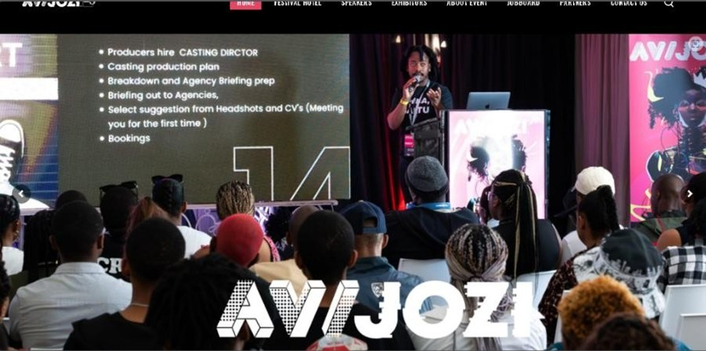

UX & UI Analysis
 Figure1 (AVIJOZI, 2025) shows the presentation section at the function.
AVOJOZI is a creative industry festival or event that takes place in Johannesburg South Africa every year, hence its name. It aims to connect technicians, animators, writers, artist and more not just on a local scale but on a global scale too. Its website above is the perfect example of a well-constructed website that has great UI and UX. User Interface (UI) is the point of human and computer interaction as well as communication in a device. This includes display screens, keyboards, a mouse, and the appearance of one is desktop, (Rouse, n.d.).
All the above mentioned and more allow the user to interact with an application or website, through visual and audio elements. User Interaction (UX) on the other hand is the overall experience a user has when interacting with a system, product, or service. This encompasses the entire process from initial contact and awareness to post usage, focusing on the user's perspective and feelings brought about the entire process. Lastly ethics often called moral philosophy are the moral principles that govern a person's behaviour or decision, in the context of web development and design this focuses on specificity when one situates themselves in their current society.
The website is a great example of UI and UX as it has a clean and modern design, with a clear layout that makes it easy to navigate. The use of white space and contrasting colors helps to draw attention to important information, while the use of images and videos adds visual interest. The website is also responsive, meaning it looks good on all devices, from desktop computers to smartphones. This is important as more and more people are using their mobile devices to access the internet. This essay aims to prove that Interaction on the web is structured through the UI and UX. A good starting point for this premise should be, what makes a reliable website, alongside with, when to spot good UI and UX design choices. To answer the first question, we need to look at if a website has the following, usability, privacy, security, transparency, accessibility, inclusion, safety, ethical persuasion, and sustainability. All of which are referred to as the principles of web design. These principles of web design draw upon UI to take effect. AVIJOZI's website encapsulates most of the above principles very well. The website is designed in such a way that it is not dull, but rather eye captivating as it draws your attention to it.
This is shown in how easy it is to navigate the website; the layout is simple yet effective. From the moment you are introduced into the home screen there is a clear objective to entertain and gasp your attention with the colour pallet. It looks and feels legit, they highlight information which looks credible and relevant not to mention they provide all the necessary whereabout and know about on how to contact them. Now another aspect which they executed very well is the inclusion part, where even though this website is not everyone's cup of tea it does contain content for different people. May it be dying hard core game enthusiasts and animation admires or just your average event lover AVIJOZI has you covered.
Figure 2 (AVIJOZI, 2025) navigation bar